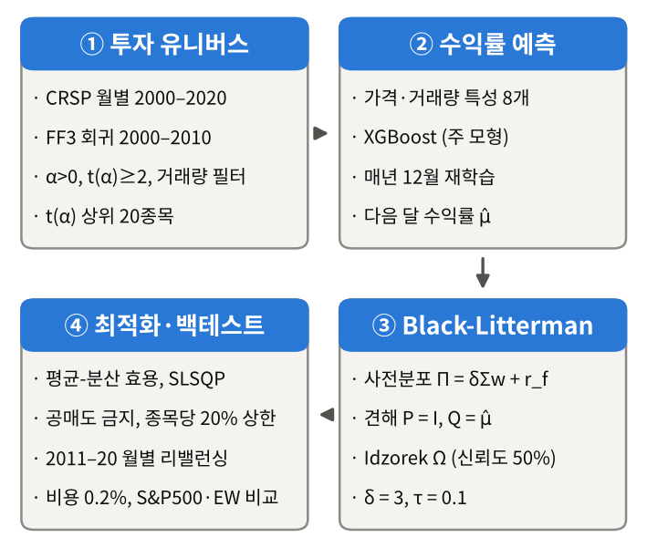

팩터 알파 스크리닝과 머신러닝 예측 뷰를 결합한
블랙-리터만 포트폴리오 최적화
Black-Litterman Portfolio Optimization with Factor-Alpha Screening and Machine Learning Views
Fama-French 3-Factor 모형 기반의 구조적 종목 선정(2,426개 → 20개), Expanding-Window 머신러닝 기대수익률 예측(5개 모델),
Idzorek(2005) 신뢰도 공식을 결합한 블랙-리터만 뷰 통합(8개 뷰 구성법), 그리고 제약 조건부 평균-분산 최적화(SLSQP)까지
총 40개(5×8) 전략 조합의 10년(2011–2020) 백테스트 및 미관측 표본 외(2021–2025) 강건성 검증 전 과정을 집대성한 웹사이트입니다.
1 핵심 백테스트 성과 대시보드 (2011.01 – 2020.12, 120개월)
2000–2010년 FF3 알파 스크리닝으로 선정된 20개 종목에 대해 매월 워크포워드 ML 예측과 블랙-리터만 최적화를 수행한 결과입니다.
| 포트폴리오 / 전략 설정 | 누적 수익률 | 연율 복리수익률 (CAGR) | 연율 변동성 | Sharpe (GS1) | Sharpe (FF) | 최대낙폭 (MDD) | 월평균 턴오버 | S&P 대비 초과 CAGR | 대응표본 $t$-통계량 |
|---|---|---|---|---|---|---|---|---|---|
| Main: XGBoost × M4 (Net, $\delta=3$, 20% Cap) | +503.09% | 19.68% | 16.11% | 1.15 | 1.16 | -19.55% | 39.20% | +5.80%p | 2.26 ($p=0.026$) |
| Main: XGBoost × M4 (Gross, 거래비용 차감 전) | +562.54% | 20.82% | 16.13% | 1.21 | 1.22 | -19.22% | 39.20% | +6.93%p | 2.67 ($p=0.009$) |
| Ex-Ante Pipeline: Elastic Net × M4 ($\delta=2.09$, 2010년 말 사전 확정) | +527.14% | 20.15% | 17.58% | 1.09 | — | -20.60% | 57.22% | +6.27%p | 2.08 ($p=0.040$) |
| Market Prior Only (뷰 없음, $\Pi = \delta\Sigma w_{mkt}+r_f$, 20% Cap) | +267.56% | 13.90% | 15.62% | 0.87 | — | -21.79% | 11.76% | +0.02%p | 0.14 ($p=0.889$) |
| Equal-Weight Prior + XGBoost × M4 ($\Pi_{EW}$, 시총 정보 배제) | +429.34% | 18.13% | 16.65% | 1.04 | 1.05 | -20.70% | 43.51% | +4.25%p | 1.60 ($p=0.112$) |
| Benchmark 1: S&P 500 Total Return Index | +267.00% | 13.88% | 13.54% | 0.98 | 0.98 | -19.60% | — | 0.00%p | — |
| Benchmark 2: Equal-Weight 20 (동일 20종목 균등비중, Net) | +240.11% | 13.02% | 16.48% | 0.78 | 0.79 | -25.07% | 6.42% | -0.86%p | -0.14 (Main 대비 $t=2.47$) |
2 4단계 퀀트 투자 프레임워크 아키텍처
고전적 마코위츠 평균-분산 최적화(MVO)의 추정 오차 증폭 문제를 해결하기 위해 팩터 스크리닝, 머신러닝, 베이지안 사전분포를 결합했습니다.
Fama-French 3-Factor 알파 스크리닝
2000–2010년(132개월) 완전 균형 패널 2,426개 상장 종목을 대상으로 FF3 시계열 회귀를 수행하여 시장·규모·가치 팩터로 설명되지 않는 구조적 초과수익($\alpha$) 종목을 추출합니다.
- 유동성 필터(하위 20% 제외) 및 변동성 가드($\sigma_i \le 2\sigma_{mkt}$)
- $\hat{\alpha}_i > 0$ 및 $t(\hat{\alpha}_i) \ge 2.0$ 통과 131개 종목
- $t(\hat{\alpha}_i)$ (= Appraisal Ratio 순위 동치) 상위 20개 선정
Expanding-Window 머신러닝 예측
Gu, Kelly & Xiu(2020)에 기반한 8개 가격·거래량 특성(모멘텀, 수익률 변동성, 거래대금, 베타, 고유변동성)으로 매월 개별 종목의 다음 달 수익률을 예측합니다.
- 2004년 12월~2019년 12월 매년 말 Expanding-Window 재학습
- 36개월 시간순 검증 분리로 하이퍼파라미터 튜닝 (미래정보 누수 차단)
- XGBoost (Main), Elastic Net, RandomForest, Transformer, ANN 비교
블랙-리터만 뷰 행렬($P, Q, \Omega$) 결합
시총가중 균형초과수익률($\Pi = \delta\Sigma w_{mkt} + r_f$)을 베이지안 사전분포로 두고, ML 예측값을 8가지 뷰 행렬($P$) 구조로 변환하여 사후 기대수익률($\mu_{BL}$)을 도출합니다.
- M4 (Identity, $P=I$) 절대 뷰 vs 팩터/비례 롱숏 상대 뷰(M1~M3, M5)
- Idzorek(2005) 50% 신뢰도 공식 적용: $\Omega = \tau\operatorname{diag}(P\Sigma P^\top)$
- 사후 기대수익률 $\mu_{BL}$이 스칼라 $\tau$ 값에 수학적으로 불변임을 증명
제약 조건부 최적화 & 120개월 리밸런싱
블랙-리터만 사후 평균·공분산($\mu_{BL}, \Sigma_{BL}$)을 목적함수에 투입하여 SLSQP 알고리즘으로 매월 최적 포트폴리오 비중을 산출하고 성과를 평가합니다.
- 공매도 금지($w_i \ge 0$), 전액 투자($\sum w_i = 1$), 단일 종목 상한($w_i \le 0.20$)
- 편도 20bp 거래비용 차감 및 상장폐지 4개 종목(PCP, GMCR, STR, PX) 처리
- 시장 국면(강세·회복·횡보·위기) 및 파라미터 민감도 검증

3 초과수익 원천 분해 & 심층 검증 핵심 결론
동료 평가에서 제기된 21개 질문에 답하기 위해 전체 파이프라인을 밑바닥부터 재구축하며 도출한 투명하고 엄밀한 실증 결론입니다.
+5.80%p 초과수익의 3단계 분해
S&P 500(13.88%) 대비 메인 전략(19.68%)이 달성한 +5.80%p의 연간 초과 복리수익률을 단계별로 분해하면 다음과 같습니다:
- ① 종목 선정 단계 (FF3 Top 20 EW): 13.02% (S&P 대비 -0.86%p) — 단순 균등보유만으로는 지수를 이기지 못함.
- ② BL 균형 사전분포 배분 (뷰 없음): 13.90% (EW20 대비 +0.88%p) — 시총 가중 사전분포가 우량 대형주 비중을 회복시킴.
- ③ 머신러닝 뷰 (XGBoost × M4): 19.68% (사전분포 대비 +5.78%p) — 초과성과의 거의 전부가 ML 예측 뷰에서 창출됨.
왜 M4(절대 뷰)가 85.3%를 설명하는가?
40개(5×8) 조합의 CAGR에 대한 이원 분산분석(2-way ANOVA) 결과, 뷰 구성 방식($P$)이 전체 변동의 85.3%를 설명한 반면 ML 모델 종류는 4.5%에 그쳤습니다.
- M4 ($P=I_N$): 20개 종목 각각의 기대수익률을 독립적인 20개 절대 뷰로 전달하여 예측 신호의 방향과 크기를 온전히 보존 (XGBoost 19.68%, Elastic Net 19.46%, RF 18.85%).
- M1~M3, M5 (단일/소수 롱숏 상대 뷰): 20차원 예측 벡터를 1~2개의 스칼라 스프레드로 압축하면서 개별 종목 알파 정보가 소실되어 균형 사전분포(~13.8%)로 수렴.
통계적 다중검정 & 2021–2025 표본 외 한계
우리는 유리한 수치만 부각하지 않고, 다중검정 보정과 미관측 기간(2021–2025) 테스트를 통해 전략의 구조적 한계를 투명하게 검증했습니다:
- 다중검정 보정: 단일 검정 $p=0.026$이나, 40개 조합 탐색을 고려한 White's Reality Check(부트스트랩 $B=5000$)에서는 $p=0.095$(10% 수준 경계적 유의).
- 연간 재선정 실험: 매년 FF3로 종목을 갈아끼우면 10년 추정창의 지연(lag)으로 2016년부터 AAPL이 탈락하고 방어주에 편중되어 CAGR이 18.13% → 10.52%로 하락.
- 2021–2025 OOS: 2010–2020년 FF3 상위 20개가 저베타 유틸리티·지역은행에 집중되면서 빅테크 주도 장세(S&P 14.43%) 대비 5.51%에 머묾을 확인.
📈 실전 확장 서비스: 오늘 당일 미국 주식 포트폴리오 구성 추천 터미널
본 연구의 4단계 파이프라인(FF3 알파 스크리닝 → XGBoost 예측 뷰 → Black-Litterman 최적화)을 현재 시점의 미국 시총 상위 80% 대형주 유니버스에 실시간 연동하여, 오늘 당일의 목표 종목 비중과 실제 매수 주문 수량(Shares)을 즉시 산출해 주는 웹 트레이딩 터미널입니다.
운용 자본금($ USD), 리밸런싱 기준일, 위험회피계수($\delta$), 뷰 비중($\tau$), 단일종목 상한(Cap 20%)을 직접 조절하면 최신 FF3 게이트 통과 우량주(NVDA, AVGO, ANET, LLY, PGR 등)의 당일 주가 기준 목표 배정액과 필요 주문 주수를 실시간 계산합니다.
블랙-리터만 사후 기대수익률($E[R]$), XGBoost, AR(2) 자기회귀, 지수평활(ETS)을 결합한 개별 종목 미래 주가 궤적 및 전체 포트폴리오 1,000회 상관 가우시안 몬테카를로 자산가치 시뮬레이션을 제공합니다.
시가총액 가중 시 단일 종목(NVDA 57.2%)에 쏠리는 집중 위험을 20% 상한과 ML 뷰로 분산하여, 최근 구간(2021–2026) MDD를 -43.6%에서 -26.6%로 낮추고 샤프 비율 1.64를 달성하는 과정을 시각화합니다.
4 웹사이트 카테고리별 상세 페이지 안내
아래 카드를 클릭하면 각 주제별로 정리된 수식, 인터랙티브 차트, 전체 데이터 테이블, 회의록 원문 및 실시간 추천 앱을 확인할 수 있습니다.
5 Team #2 연구진 및 역할 분담
모듈형 분업 아키텍처를 통해 데이터 전처리, 팩터 스크리닝, 5개 ML 모델 개발, BL 최적화 엔진 및 사후 검증을 완수했습니다.
블랙-리터만 최적화 엔진(5_BL_Fin) 및 백테스트 프레임워크(6_Backtest) 설계·구현, Transformer 뷰 생성 파이프라인 구축, BL 파라미터($\delta, \tau, \Omega$) 이론적 정립, 전체 코드베이스 통합(run_all.py) 및 GitHub 리포지토리 관리.
메인 예측 모델인 XGBoost 및 Transformer 수익률 예측 모듈(4_Module_Based_ML) 개발, Expanding-Window 워크포워드 검증 루프 구현, M1~M5 뷰 행렬($P, Q, \Omega$) 산출 및 하이퍼파라미터 그리드 튜닝.
XGBoost 기반 뷰 생성 방법론 설계 참여, 팩터 로딩 기반 상대 뷰(M1~M3) 및 절대 뷰(M4) 비교 분석, 국·영문 최종 프로젝트 보고서(Project_Report) 집필 및 최종 발표 프레젠테이션 슬라이드 제작.
CRSP·FF3·FRED 원천 데이터 전처리(1_Project_Data), Fama-French 3-Factor OLS 회귀 및 4단계 종목 선정 파이프라인(2_Fama French 3 factor model security selection) 구축, 잔차 부트스트랩 및 다중검정 통계 진단 수행.
3층 신경망(ANN) 및 Elastic Net 수익률 예측·뷰 생성 모듈(4_Module_Based_ML) 개발, 규제가 있는 선형 모형과 비선형 딥러닝 모형의 예측력 비교, 포트폴리오 시각화 및 발표자료 디자인.
RandomForest 예측 및 뷰 생성 모듈 개발, 위험회피계수 $\delta$ 캘리브레이션(3_setting_delta) 및 문헌 조사, 동료 평가 21개 질문 대응 실증 분석 및 2021–2025 OOS 검증(7_QA_Analysis), 최종 보고서 및 발표 영상 제작.